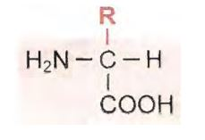
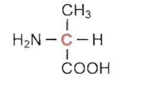
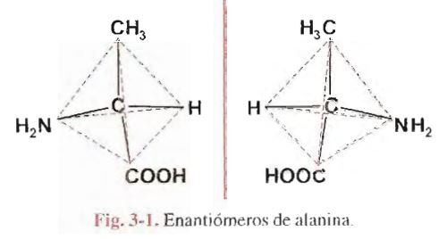

Practicamente todos los procesos biólogicos dependen de la presencia y/o actividad de este tipo de sustancias. Bastan algunos ejemplos para dar idea de la variedad y trascendencia de funciones a ellas asignadas. Son proteínas casi todas las:
enzimas, catalizadores de reacciones químicas en organismos vivientes;
muchas hormonas, reguladores de actividades celulares;
la hemoglobina y otras moléculas con funciones de transporte en la sangre;
anticuerpos, encargados de acciones de defensa natural contra infecciones o agentes extraños;
los receptores de las células, a los cuales se fijan moléculas capaces de desencadenar una respuesta determinada;
la Actina y la Miosina, responsables finales del acortamiento del músculo durante la contracción;
el colágeno, integrante de fibras altamente resistentes en tejidos de sostén.
Hoy es posible interpretar mecanismos íntimos que condicionan muchos procesos vitales y, sobre todo, demostrar la estrecha relación existente entre estructura molecular y función
Todas las proteínas contienen carbono, hidrógeno, oxígeno y nitrógeno y casi todas poseen también azufre. Si bien hay ligeras variaciones en diferentes proteínas, el contenido de nitrógeno representa, termino medio, 16% de la masa total de la molécula; es decir, cada 6,25g de proteina contiene 1 g de N. El factor de 6,25 se utiliza para estimar la cantidad de proteina existente en una muestra a partir de la medición de N de la misma
Las Proteínas son moléculas de enorme tamaño; pertenecen a la categoria de macromoléculas, constituidas por el gran numero de unidades estructurales. En otros terminos, se trata de POLIMEROS (POLI: muchos; Meros: partes).
Debido a su gran tamaño, cuando estas moléculas se dispersan en un solvente adecuado, forman obligadamente soluciones coloidales, con características que las distinguen de las soluciones de moléculas pequeñas
Por hidrólisis se obtienen las unidades estructurales de las proteínas, los aminoácidos, de bajo peso molecular, existen veinte especies diferentes de aminoácidos
Los aminoácidos constituyentes de proteinas son compuestos con un grupo ácido, carboxilo (-COOH) y un grupo básico, amina (-NH2), unido al carbono alfa ( el carbono alfa de un ácido orgánico es el inmediato al carboxilo) Son, entonces, alfa-aminoácidos y su formula general es :
donde R corresponde a la cadena lateral, diferente para cada uno de los veinte aminoácidos distintos que se obtienen de la hidrolisis de proteínas
De acuerdo con la formula general presentada, todos los aminoácidos (excepto la glicina, en la cual R es un hidrógeno) tienen las cuatro valencias de carbono alfa saturadas por grupos diferentes Este hecho determina la existencia de dos isómeros ópticos, con configuración espacial distinta, para cada aminoácido.
Se domina isómeros a compuestos diferentes con la misma formula molecular. Contienen igual número y clase de átomos, pero unidos entre sí de manera distinta. Cuando difieren en su disposición espacial, se tienen isómeros, categoría a la cual pertenecen los isómeros ópticos
Según la teoría tetraédrica, los cuatro enlaces del átomo de carbono son equivalentes y orientados hacia los vértices de un tetraedro regular, Cuando cada una de las valencias está saturada por elementos o grupos atómicos diferentes, la molécula resulta asimétrica, Se dice en ese caso que el carbono es asimétrico.
Por ejemplo, en el aminoácido alanina:
el carbono en rojo es asimétrico porque está unido a cuatro grupos atómicos distintos ( -H, -CH3, -NH2 y -COOH )
Los grupos unidos al carbono asimétrico central pueden ser dispuestos en el espacio de dos maneras diferentes. De ello resultan dos moléculas, cada una de las cuales es la imagen en el espejo de la otra. Estos isómeros no son superponibles; guardan entre sí la misma relación existente entre la mano izquierda y la mano derecha, de allí el nombre de compuestos quirales dado a este tipo de isómeros (del griego Kiros: mano ). Se los conoce también como isómeros ópticos, enantiomeros o enantiomorfos.
Isómeros de este tipo poseen muchas de sus propiedades químicas iguales y propiedades físicas idénticas, excepto su capacidad para desviar el plano de vibración de la luz polarizada en uno u otro sentido
De los alfa-aminoácido obtenidos por hidrólisis de proteínas, la mayoría posee un grupo ácido carboxilo y un grupo básico amina, razón por la cual se los considera neutros. Dos de ellos tienen un grupo carboxilo adicional que les confiere carácter ácido, mientras otros poseen grupos básicos adicionales. Dos de los aminoácidos contienen azufre en su molécula. Finalmente hay uno, denominado prolina en el cual el carbono adyacente al de la función carboxilo forma parte de un ciclo
A continuación se presentan los aminoácidos constituyentes de proteínas, agrupados según las características de sus cadenas abreviadas, una de tres y otra de una letra, para indicar cada aminoácido. Ambas figuran al pie de la formula respectiva. Las cadenas laterales se representan en rojo
************* PAGINA 24Las propiedades de la cadena de cada aminoácido permiten predecir su comportamiento. El grupo sulfhidrilo de cisteína con otro similar para formar uniones disulfuro (-S-S-). Dos cisteínas ligadas por este tipo de enlace covalente forman cistina
IMAGEN P26 CISTINAEl grupo carboxilo adicional de ácidos aspártico y glutámico, además de otorgarles carácter ácido, da a estos aminoacidos la propiedad de interactuar con sustancias básicas para formar uniones de tipo salino. También pueden establecer atracciones electrostáticas de este tipo los aminoácidos diaminados.
Las características de las cadenas laterales permiten agrupar los aminoácidos en: POLARES: GLICINA, SERINA, TREONINA, ISTEÍNA, TIROSINA, ÁCIDO ASPÁRTICO, ÁCIDO GLUTÁMICO, ASPARRAGINA, GLUTAMINA, LISINA, LEUCINA, ISOLEUCINA, METIONINA, FENILALANINA, TRITÓFANO y PROLINA.
La existencia, en una misma molécula, de grupos ácido y básico, da a los aminoácidos propiedades eléctricas particulares. Como se ha visto, el grupo carboxilo se comporta como ácido o dador de protones: -COOH => -COO- + H+ El grupo amina acepta protones; actúa como base: -NH2 + H+ => -NH3+ En fórmulas precedentes se ha presentado a los aminoácidos con sus funciones no ionizadas, situación improbable en los medios biologicos. En realidad, al estado cristalino o en soluciones acuosas, estos compuestos se encuentran dusiciados, con cargas positiva y negativa sobre la misma molécula. Por esta razón, se dice que los aminoácidos son iones dipolares, anfolitos o anfoteros. El vocablo alemán ZWITTERION también se utiliza para designar este tipo de iones. Por ello, es más correcto representar a los alfa-aminoácidos como iones dipolares (en rojo, los grupos disociados): IMAGEN**** En soluciones ácidas fuertes, el ion dipolar capta un ion hidrógeno o protón a nivel de su carboxilo, el cual, en esas condiciones, se comporta como una base. El aminoácido se convierte entonces en un ion con carga positiva o catión, es decir, migra hacia el cátodo si se establece un campo eléctronico en la solución.
IMAGEN***En soluciones alcalinas, el protón de la función -NH3+ reacciona con iones hidroxilo para formar agua y el aminoácido queda cargado negativamente (ion negativo o anión) Es decir, a un pH fuerte alcalino, el grupo NH3+ se comporta como ácido.
imagen******* La carga eléctrica del aminoácido depende del pH del medio en el cual está disuelto. Si la concentración de iones hidrógeno aumenta en el medio, los iones -COO- (carboxilato) captan protones, disminuyen progresivamente las formas iónicas dipolares y se forman cationes. En cambio, cuando disminuye la concentración de H+, esto es, aumenta la de OH-, los grupos -NH3+ ceden H+, pierden su carga y se forman aniones. Hay un valor de PH, característico para cada aminoácido, en el cual la disociación de cargas positivas y negativas se iguala y, por lo tanto, la carga total del aminoácido es nula. A este valor de pH se lo denomina punto isoeléctrico (pHi o pI).En los aminoácidos dicarboxilicos o diaminados existe un grupo disociable adicional. Al analizar el comportamiento del ácido aspártico, por ejemplo, se puede comprobar que en un medio ácido fuerte está completamnete protonado. Si se alcaniliza la solución por adición de una base fuerte (NaOH), el aminoácido cedera protones. El ácido aspártico forma sucesivamente distintas especies iónicas a medida que el pH aumenta (fig 3-4) Analoga comparación se puede hacer con aminoácidos diaminados como, por eje, la LISINA
El estudio de las curvas de titulación de ácidos y bases débiles, consideradas en el capitulo anterior, tiene interés para comprender el comportamiento ácido-base de esas sustancias en solución. Analizaremos la curva correspondiente a un aminoácido con dos grupos ionizables y tomaremos como ejemplos la alanina (+H3N-CHR-COO-;) R corresponde a metilo en la alanina
Los equilibrios de sisociación para cada uno de los grupos ionizables del aminoácido se indican en las ecuaciones siguientes:
IMAGEN DE ecuacionesEn una solución de alanina en agua pura, las dos funciones del aminoácido están ionizadas y el pH del medio es el correspondiente al punto isoeléctrico de alanina (pH= 6.02). A partir de este punto se pueden realizar dos titulaciones por separado, la del grupo -COO-, que se comporta como una base al aceptar protones y la del grupo NH3+, que actua como ácido debil, liberando H+. Para la primera neutralización puede utilizarse una solucion de HCl y para la segunda, una de NaOH. La representación conjunta de los cambios de pH producidos en el curso de ambas valoraciones da una curva bifasica (fig- 3-6)
Antes de agregar HCl, todas las moléculas del aminoácido se encuentran al estado de ion dipolar (pH=6.02=pHi) La adición de ácido aumenta la concentración de H+ del medio y determina la aceptación de protones por parte de grupos -COO-, aL llegar a pH 2.34, la mitad de los grupos -COOH presentes se encuentra al estadono disociado; las concentraciones de las formas +H3N-CHR-COOH y +H3N-CHR-COO- se igualan. Dicho valor de pH corresponde al pK del carboxilo (pK1). Si se continúa agregando ácido se alcanza un punto en el cual Prácticamente todas las moléculas de aminoácido están protonadas (+H3N-CHR-COOH), situación que corresponde al extremo inferior de la gráfica
La mitad superior de la curva se obtiene por titulación con NaOH. A partir del pHi, el aumento de la concentración de OH- provocado por la adición del ÁLCALI, determina la sustracción de H+ del medio para formar agua. Esto crea una nueva situación de equilibrio, en la cual los grupos -NH3+ se comportan como ácidos débiles, liberando protones. El punto medio de esta segunda fase se alcanza cuando las concentraciones de los iones +H3N-CHR-COO- Y H2N-CHR-COO- son iguales lo cual sucede a pH 9.69 valor igual al pK del grupo -NH3+ de la alanina (pK2),Si se continúa añadiendo NaOH hasta total neutralización, los grupos NH3+ terinan por liberar sus H+ y el compuesto queda finalmente desprotonado (H2N-CHR-COO-)
La curva de titulación permite determinar los valores de pK de cada uno delos grupos ionizables del aminoácido. El aplanamiento de la grafica en las cercanías de los puntos correspondientes a los pK, indica que el aminoácido puede actuar como amortiguador o Buffer en esas dos zonas de pH. La gráfica indica también el pHi en el punto de inflexión que separa las dos fases de la curva.
Todos los aminoácidos neutros, es decir, los que poseen una cadena lateral no ionizable dan curvas de titulación similares a las de alanina. Los valores de pK1 (del grupo carboxilo inmediato al carbono alfa) de los distintos aminoácidos, si bien son ligeramente diferentes entre sí, son todos proxímos a 2; los valores de Pk2 (del grupo amina unidos al carbono alfa) varían entre 9 y 10.
Los aminoácidos con un tercer grupo ionizable en la cadena lateral dan curvas de titulación trifasicas y tienen tres valores de pK, además de los aminoácidos dicarboxilicos y de los básicos, deben incluirse en este grupo cisteina y tirosina, cuyos grupos -SH y FENOL, respectivamente, actuán como ácidos débiles. En general, los valores de pK para los grupos ionizables se encuentran alejados del pH habitual en nuestro organismo (cercano a la neutralidad) A esto hace excepción la histina, en la cual uno de los N del núcleo imidazol puede captar un protón. Como el pK de ese grupo tiene un valor de 6.0 la Histina es el único aminoácido que actúa como amortiguador al pH fisiológico.
Los aminoácidos participan en muchas reacciones químicas. Algunas de ellas comprenden a los grupos amina o carboxilo unidos al carbono alfa, ptras son especificas de determinadas cadenas laterales y sirven para identificar en una muestra la existencia de un aminoácido en particular.